Textbooks
Here is the list of textbooks that contain materials related to this course. Books in the primary section are used as a main source of material. Books in the additional sections contain additional useful information. Some course topics are based on other external material, which will be provided in lectures.
Computer Architecture
Primary
-
[CODR]
David A. Patterson, John L. Hennessy. Computer Organization and Design RISC-V Edition: The Hardware Software Interface. Online materials are here. 2st Edition. 2020.
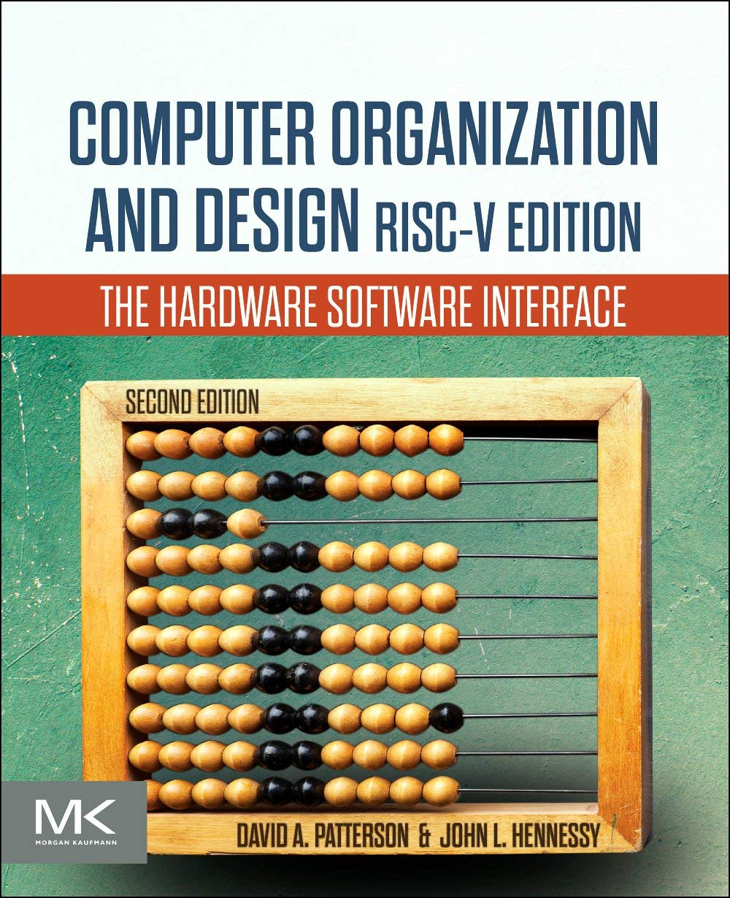
-
[DDCA]
David Harris, Sarah Harris. Digital Design and Computer Architecture: RISC-V Edition. Online materials are here. 1st Edition. 2021.
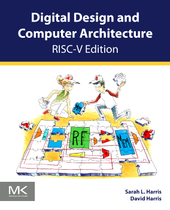
-
[CSPP]
Randal E. Bryant, David R. O’Hallaron. Computer Systems: A Programmer’s Perspective. Online materials are here. 3rd Edition. 2015.
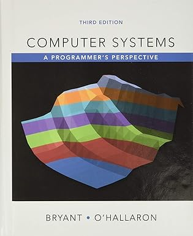
-
[IAPR]
Edson Borin. An Introduction to Assembly Programming with RISC-V. Online book.
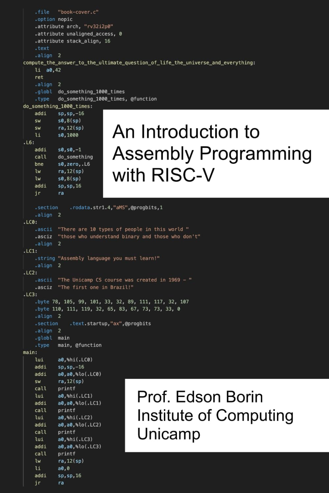
Additional
-
[SCO]
Andrew S. Tanenbaum, Todd Austin. Structured Computer Organization. 6th Edition. 2013.
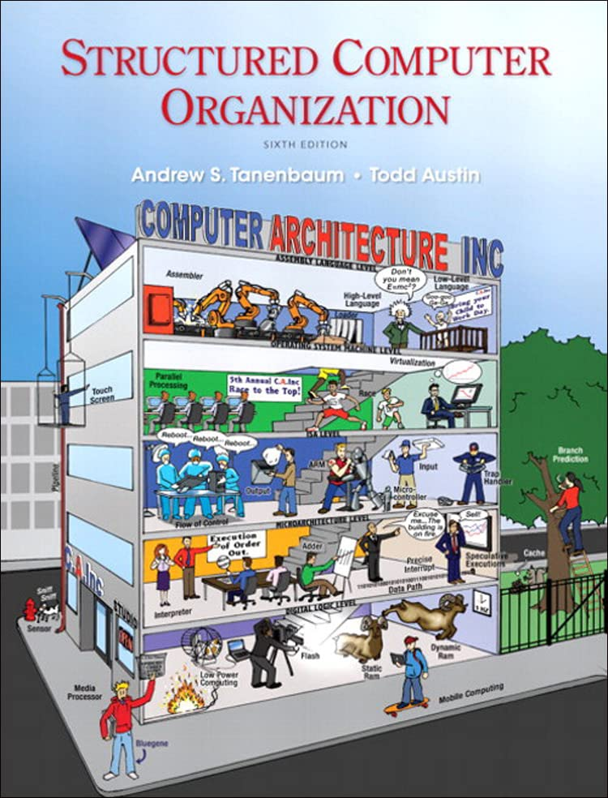
-
[COA]
William Stallings. Computer Organization and Architecture. 11th Edition. 2022.
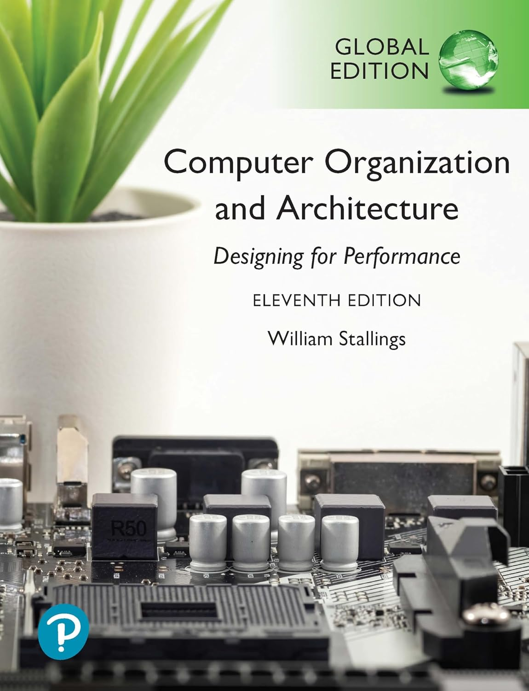
-
[CAQA]
John L. Hennessy David A. Patterson. Computer Architecture: A Quantitative Approach. Online materials are here. 6th Edition. 2017.
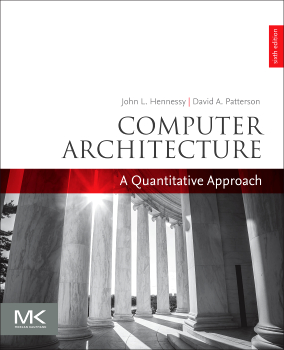
-
[DDCA]
David Harris, Sarah Harris. Digital Design and Computer Architecture. Online materials are here. 2nd Edition. 2012.
-
[DDCAA]
David Harris, Sarah Harris. Digital Design and Computer Architecture: ARM Edition. Online materials are here. 2015.
-
[CODA]
David A. Patterson, John L. Hennessy. Computer Organization and Design ARM Edition: The Hardware Software Interface. 1st Edition. 2016.
-
[CODM]
David A. Patterson, John L. Hennessy. Computer Organization and Design MIPS Edition: The Hardware Software Interface. 5th Edition. 2013.
-
[PARL]
Paul E. McKenney. Is Parallel Programming Hard, And, If So, What Can You Do About It?. 2024.
Operating Systems
Primary
-
[COMET]
Remzi H. Arpaci-Dusseau and Andrea C. Arpaci-Dusseau. Operating Systems: Three Easy Pieces. 2018.
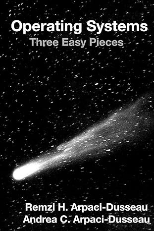
-
[TLPI]
Michael Kerrisk. The Linux Programming Interface: A Linux and UNIX System Programming Handbook. 1st Edition. 2010.
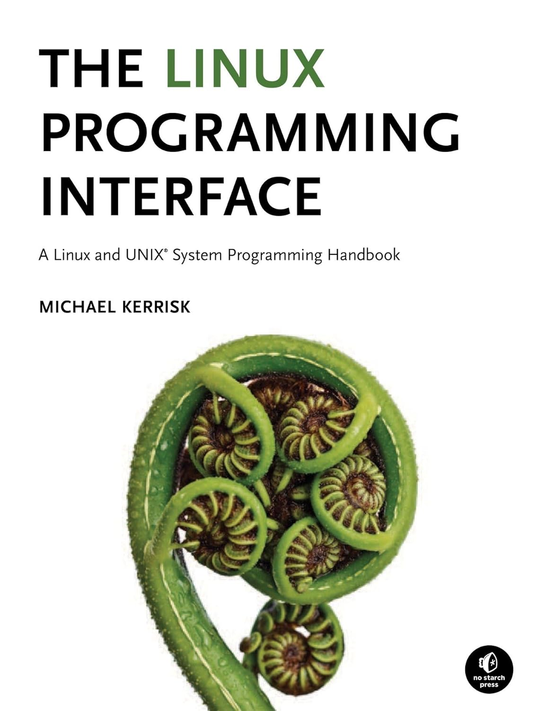
-
[OSC]
Abraham Silberschatz, Greg Gagne, Peter B. Galvin. Operating System Concepts. 10th Edition. 2018.

-
[BGSP]
Brendan Gregg. Systems Performance (Addison-Wesley Professional Computing Series). 2nd Edition. 2020.
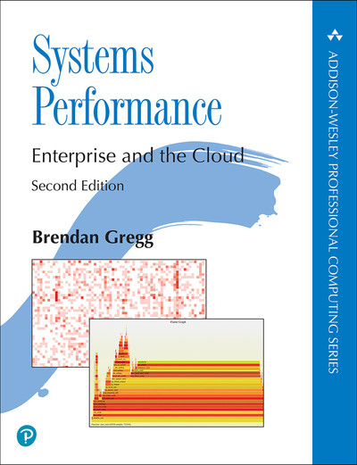
Additional
-
[MOS]
Andrew S. Tanenbaum, Herbert Bos. Modern Operating Systems. 4th Edition. 2015.
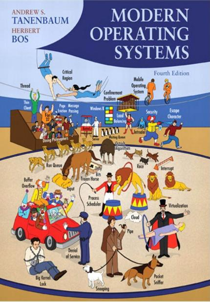
-
[OSIDP]
William Stallings. Operating Systems: Internals and Design Principles. 9th Edition. 2018.
-
[PGLC]
Mark G. Sobell, Matthew Helmke. Practical Guide to Linux Commands, Editors, and Shell Programming. 4th Edition. 2018.